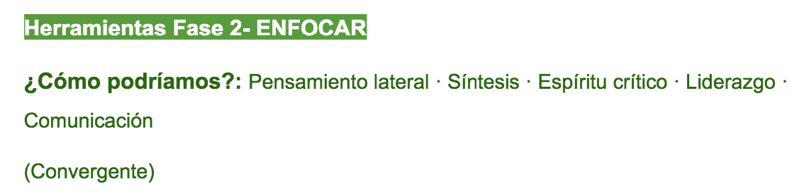
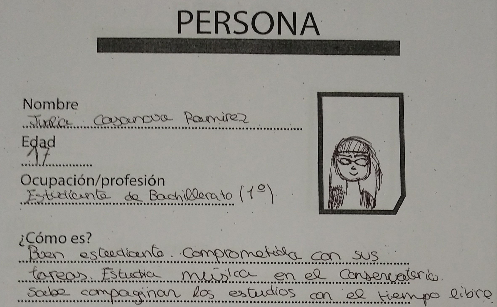
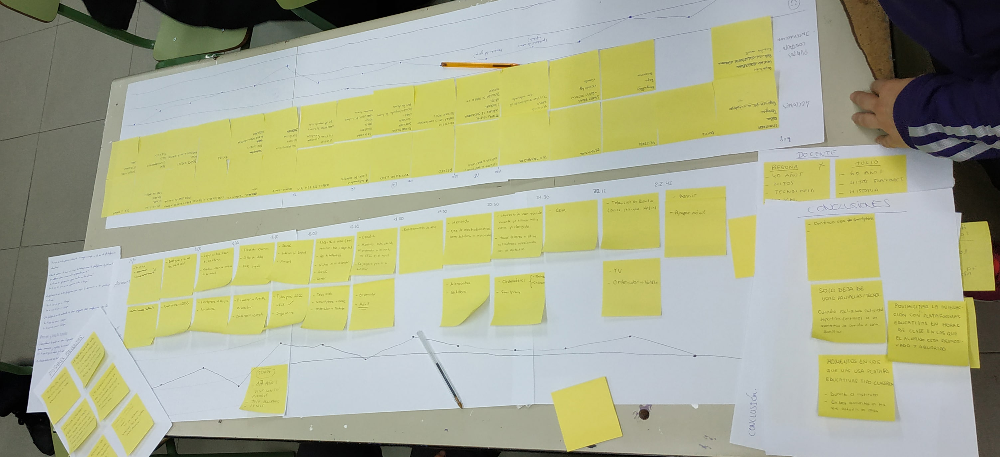
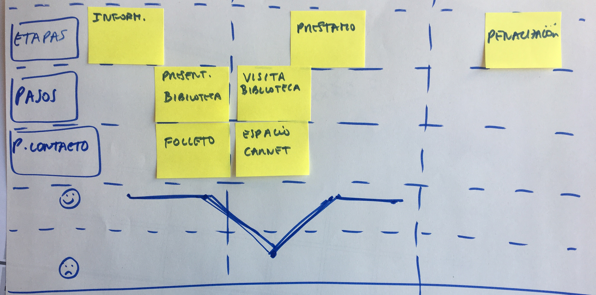
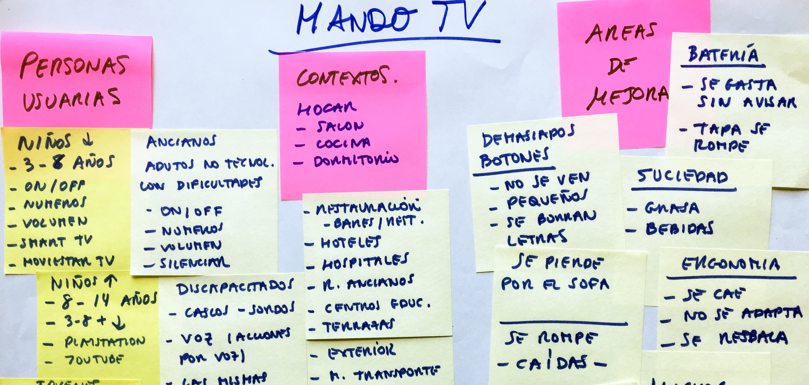
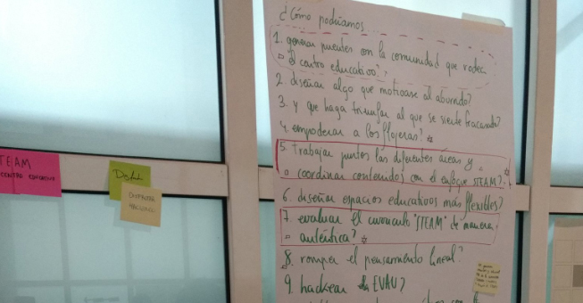

Definición: Herramientas y experiencias según aplicación

Con base a las conclusiones de investigación planteamos varias vías de trabajo.
En esta fase somos capaces de detectar diversos caminos para abordar el tema de trabajo, aprendemos a elaborar diferentes retos y a seleccionar uno.
Es importante hacer énfasis en todo lo que hemos sido capaces de descubrir y en el hecho de que podemos abordar los problemas o desafíos desde diferentes perspectivas, de manera que podemos vislumbrar varios caminos para llegar a una solución.
En general, por lo que he podido observar en mi trabajo de facilitación con jóvenes y adultos, esta fase nos cuesta mucho, ya que tenemos bastantes frenos que nos impiden tomar una decisión rápida para seleccionar una vía de las que hemos podido construir.
En este punto considero importante transmitir que no hay una vía mala y otra buena, que todas pueden ser abordables, así que comenzamos por una, la que el grupo sienta que es más interesante, viable, más auténtica, que responde mejor a las necesidades de las personas usuarias. Recordemos que estamos entrenando.
Evitemos debatir y argumentar pros y contras durante más de 10 minutos. Cada miembro del equipo propone una vía y elegimos por consenso.
Pero antes de llegar a seleccionar utilizamos herramientas de síntesis, que nos permiten visualizar lo aprendido en la fase de investigación. Estas son algunas de ellas:
1- Método persona
“Persona” es, en Design Thinking, un personaje arquetípico dotado de una personalidad ficticia, que representa a usuarios que tienen atributos y objetivos comunes.

El objetivo de esta herramienta de síntesis es que nos focalicemos en las necesidades de los grupos de usuarios, reduciendo un universo muy extenso de usuarios a unos arquetipos que los representen.
Los arquetipos se basan en la información que hayamos obtenido durante la fase de investigación. Habremos entrevistado, observado, seguido, analizado, a diferentes personas usuarias y podremos agrupar en arquetipos a aquellas personas cuyo punto de vista, necesidades, objetivos…, son similares.
Construiremos personas, que aunque “inventadas” responderán a esa tipología de personas usuarias que tiene mucho en común. Digo que las inventaremos porque lo que haremos es no fijarnos en ninguna de las personas que hemos conocido en particular, sino imaginar una identidad: nombre, género, edad, etc. que responda a ese grupo de personas que tienen atributos comunes.
Construiremos de 3 a 6.
Esta herramienta nos ayudará a identificar patrones, puntos de vista opuestos, necesidades o problemas comunes o contradictorios.
Utilizaremos una ficha por cada arquetipo, que contendrá la siguiente información: datos personales, datos demográficos (edad, género, intereses), foto o dibujo, conclusiones verbatim (frases literales, que expresan sus miedos, necesidades, puntos de vista) y narraciones. Tendremos presente a estos arquetipos durante todo el proceso, para tener en cuenta en todo momento para quienes estamos trabajando.
2- Empathy Map Canvas (Mapa de empatía)
XPLANE, una consultora de diseño estratégico definió esta herramienta como parte de un kit de herramientas para el diseño centrado en las personas. Es útil para conocer en profundidad a las personas que estemos analizando (clientes, trabajadores, personas usuarias)
En 2007 Dave Gray re-diseñó la herramienta, que podéis encontrar y descargar en este enlace.
Nuestra aportación es ofreceros un mapa de empatía simplificado, únicamente para que el alumnado empiece a profundizar en sus análisis cuando trata de comprender a las personas usuarias.

Es una herramienta de síntesis, con lo que tampoco corresponde a una persona en concreto, sino que se refiere a un arquetipo. De hecho se utiliza para entender el punto de vista de una tipología de personas respecto de un tema, producto o servicio. Nos sirve para profundizar en el punto de vista del arquetipo.
Respondemos a una serie de preguntas con la información obtenida de la investigación más la síntesis del arquetipo “persona”, en su caso.
El mapa tendría los siguientes apartados:
- ¿Qué siente y piensa? Qué es lo que realmente siente y piensa, lo que realmente le importa. Sus propósitos, aspiraciones...
- ¿Qué oye? Qué le dicen sus familiares, su pareja, sus amigos, que oye en su centro de trabajo, que oye de las personas que le influyen...
- ¿Qué ve? Qué ve en su entorno familiar, social, profesional, en el centro educativo, en redes sociales, videos...
- ¿Qué hace y dice? En casa, en la oficina, en el instituto, con su grupo de amigos o amigas, cuál es su actitud, como se comporta con sus compañeros, cómo se viste, cómo se expresa…
3- Journey map (mapa del viaje de la persona usuaria)
Es una herramienta de síntesis y visualización que se utiliza principalmente en diseño de servicios. Nos hace percibir los servicios como procesos (visualizamos las etapas: antes, durante y después del servicio).
Nos ayuda a detectar los momentos críticos del servicio.
Se construye a base de datos, los datos que hemos recogido en la fase de investigación.
Si queremos mejorar un servicio que se lleva a cabo en el centro educativo, será muy útil.
Una vez hemos realizado la investigación, realizamos un mapa del viaje del usuario, en el que visualizar los pasos que da, respecto del servicio o la experiencia, el actor principal del servicio.
Imaginemos que pretendemos mejorar el servicio de la biblioteca. Una vez realizada la investigación, en la que habremos observado a los usuarios (alumnado, bibliotecario/a, profesorado, familias) podremos completar un mapa del viaje de la persona usuaria.
Primero deberemos definir la “escala” del mapa: Si queremos visualizar todo el proceso o solamente la etapa que tiene lugar en la biblioteca, por ejemplo.
Una vez lo tengamos claro, seleccionaremos el actor principal, en nuestro ejemplo es el alumnado de infantil, que requiere que algún adulto le acompañe.
Si hay varios actores importantes, construimos un mapa para cada uno.
Normalmente, trabajando en el entorno educativo el actor principal es el alumnado, aunque también puede ser importante analizar el viaje del docente para definir soluciones que se adapten a la organización del centro. En el caso de la fotografía, el alumnado mapeo el día a día del alumnado de bachillerato y el del docente, usuarios principales de una aplicación web que estaban diseñando.
En el mapa nos interesa captar lo que la persona usuaria siente a cada paso del proceso y cómo se relaciona con cada punto de contacto (la web, un folleto, el espacio, el carnet de biblioteca, la aplicación móvil, etc.) del servicio o experiencia.

El mapa tendrá de 3 a 6 capas (que son las filas en las que se divide el mapa).
La primera vez que se utiliza es suficiente con definir tres capas: pasos de la persona usuaria, puntos de contacto y capa emocional.
De arriba a abajo, las capas del mapa de empatía son:
1- Fases del proceso. Por ejemplo, si seguimos con el ejemplo de la biblioteca: antes del servicio: información, durante el servicio: préstamo, devolución, después del servicio: penalización.
2- Pasos de la persona usuaria: Recibe información sobre el servicio de la biblioteca, recibe el carnet, asiste a la presentación de la biblioteca, queda con sus padres para ir a la biblioteca, visita la biblioteca junto a sus padres para coger un libro, lo coge, se lleva el libro a casa, lo lee, lo devuelve, le penalizan o no, lo prescribe.
3- Puntos de contacto con los que se relaciona: Cuando recibe la información, por ejemplo, el folleto. Cuando saca el libro, el espacio de la biblioteca y el carnet.
4- Personas con las que se relaciona: Cuando recibe la información, el profesorado. Cuando realiza el préstamo, la bibliotecaria.
5- Capa emocional. Se divide en dos filas enmarcadas por dos emoticonos, uno sonriente en la parte superior y otro triste en la inferior. En esta capa señalamos cómo se siente la persona usuaria respecto al momento del proceso. Recordamos que ser trata de una herramienta de síntesis, así que no hacemos el mapeo pensando en una persona en concreto, sino en el arquetipo o conjunto de personas usuarias, con base a la información que hemos averiguado mediante la investigación.

Siguiendo con nuestro ejemplo: En el momento que recibe la información por parte del profesorado ponemos una cara sonriente, porque fue mediante un juego y se divirtió mucho. En el momento en el que va a la biblioteca hace mucho calor y hay mucha gente porque la biblioteca solo está abierta durante una hora y se acumulan muchas personas. Ponemos una cara triste.
De esta manera detectamos los momentos que debemos mejorar del servicio o la experiencia.
4- Conclusiones o descubrimientos
Panel conclusiones investigación o puesta en común.
Es una herramienta que nos ayuda a sintetizar la información obtenida.
Consta de tres apartados, aunque podemos añadir los que necesitemos: en el primero situamos la información obtenida sobre las personas usuarias, en el segundo sobre los contextos de utilización (o espacios, o elementos de interacción) y en el tercero visualizamos las carencias o problemas detectados.
Ejemplo rediseño mando de tv:

Primero analizan los diferentes tipos de usuarios de mando de tv.
De esta forma llegan a pensar que un producto o un servicio tiene que adaptarse a personas muy diferentes.
Niños de 3 a 8 años. “Empiezan a coger el mando. Utilizan canales infantiles y pueden acceder a smart tv”.
Adolescentes, jóvenes, adultos habituados a productos tecnológicos, adultos no usuarios habituales de smartphones y redes sociales, ancianos, personas con discapacidad o con capacidades diferentes…
Cada persona usuaria tendrá sus costumbres, hábitos a la hora de utilizar el mando… unos verán el tele-texto y otros no sabrán ni lo que es...unos accederán a smart tv y otros solo utilizarán 4 o 5 botones…
Normalmente, cuando trabajan en equipo en esta dinámica, les sugiero que cada uno se ponga en la piel de una persona usuaria diferente y escriba los botones del mando que utilizaría habitualmente. Así, en pocos minutos, podemos tener caracterizados tantos tipos de usuarios como miembros haya en el equipo.
La columna de los contextos se completa entre todos. ¿En qué contextos se puede utilizar un mando de tv?: en el salón, en la cocina (grasa), en un dormitorio… ¿Dónde más? En un hotel, una residencia de ancianos, un hospital…
Poco a poco nos damos cuenta que estamos pensando en sitios en los que a priori no habíamos pensado. Esto nos hace “abrir la mente”, comenzar a pensar de otra forma. Las cosas no son tan evidentes.
La columna de las necesidades no cubiertas o carencias del producto nos sale sola porque ya conocemos los usuarios y los contextos donde pueden utilizar el producto.
Así nos surgen cosas como: que para una persona mayor es importante poder leer los números, o que los números y las letras se borran, o que la tapa de las pilas se estropea, que el mando no avisa cuando se acaban las pilas…
Una vez tenemos concluido este panel detectamos que hemos hecho algunos descubrimientos: tipos de personas que lo tienen más difícil, usuarios que no están satisfechos, y es entonces cuando empezamos a enfocar el proyecto.
Insights (Entendimientos).
Después de utilizar alguna de las herramientas de síntesis, hemos podido visualizar lo que hemos descubierto: áreas de mejora, restricciones, obstáculos, etc.
Es el momento de expresar lo aprendido.
Redactamos una serie de frases, que llamamos insights, que expresan un entendimiento.
Entendemos la causa de un problema y la consecuencia para las personas en un contexto.
Vamos a basarnos en los insights para definir posibles retos.
Suelen construirse expresando frases que contienen información sobre: Una persona + una acción + objetivo + obstáculo.
Por ejemplo: El alumnado, cuando va a la biblioteca por las tardes con su familia para divertirse, leer o coger un libro para casa, se frustra debido al calor, la falta de espacio y la aglomeración de personas en la zona de préstamo de libros.
Una vez que hemos trabajado con base a alguna o varias de las herramientas de síntesis y hemos redactado algún insight, es el momento de poder empezar a trabajar la definición de reto.
5. Retos
En algunos casos, sobretodo si estamos trabajando en un taller corto, podemos simplificar y pasar directamente de las conclusiones al reto, sin formular formalmente más de uno.
Somos conscientes de que hay varios caminos, pero solo definimos aquel que vamos a abordar (como en el ejemplo visto en el bloque 3 del taller de diseño de mando de tv.)
Si disponemos de más tiempo es muy interesante percibir cómo el proyecto puede tomar diferentes caminos y expresarlos.
Lluvia de retos.
Una vez definidas las conclusiones hacemos una lluvia de retos. Es igual que una lluvia de ideas, pero el objetivo no es encontrar soluciones aún, sino enfocar el problema, retándonos a solucionarlo. ¿Cómo podríamos…?
NOTA: En este momento es bastante habitual que el alumnado (a los adultos nos pasa lo mismo) empiece a expresar soluciones. Suelo decirles que se apunten las ideas y las guarden para la fase de ideación, ya que ahora queremos invertir tiempo y esfuerzo en definir el desafío.
La dinámica para la lluvia de retos es la misma que la de la lluvia de ideas.
La lluvia de retos termina cuando tenemos al menos 5 retos diferentes.
Los expresamos mediante preguntas.
Las preguntas no deben ser muy cerradas, ya que nos llevarán a soluciones muy evidentes; ni muy abiertas, ya que podemos perder el objetivo o foco del proyecto.
Hacer un listado en una hoja grande ayuda a redactarlos entre todos y a visualizarlos.

Un reto podría ser: ¿Cómo podríamos garantizar al alumnado de infantil y sus familias un acceso y disfrute de la biblioteca para promover la lectura?
Selección de un reto.
La selección del reto es por consenso.

Si resulta difícil seleccionar el reto por consenso podemos hacer una votación: cada miembro del equipo tendrá tres gomets (o realizará tres círculos con rotulador para marcar sus preferencias) y votará el reto más viable (aquel que podríamos abordar fácilmente), el más innovador y el que se adapta mejor a las personas usuarias.
En este momento es conveniente repasar los insights o las conclusiones más importantes para hacer una elección consciente.
Una vez todos los miembros del equipo han votado, se selecciona la idea más votada o un híbrido (en caso de que dos retos sean compatibles)
Una vez hayamos elegido uno de los retos o hayamos formulado un híbrido entre dos retos para continuar el proceso, podemos utilizar varias fichas para terminar de definir o matizar el reto seleccionado.
NOTA: Es importante tener en cuenta que el reto puede evolucionar durante el proceso.
Ficha reto.
Podemos utilizar una ficha para poner en limpio nuestro reto, como reto definitivo. (ficha 1) Podemos utilizar otra ficha que nos ayude a reflexionar y a entender de dónde parte nuestro reto y visualizar el proceso que hasta ahora hemos seguido. (ficha 2)
Otras herramientas de síntesis:
Un diagrama de Venn, o un esquema con base a columnas y filas tipo tabla pueden ser una opción según cuales sean los objetivos que persigas.
Es interesante que el alumnado y el profesorado pueda construir sus propias herramientas. La creatividad no solo se aplica en la generación de ideas, sino a lo largo de todo el proceso.
Lo que aquí he recogido son herramientas que se utilizan en el entorno profesional, pero que pueden traducirse fácilmente en el aula.
Aunque no se completen de forma ortodoxa por el alumnado, su simple utilización consigue que éste experimente que antes de generar ideas hay mucho que hacer; que para evolucionar, mejorar o abordar cualquier desafío es preciso analizar, sintetizar, comparar, tomar decisiones, etc. Y en equipo!.
ANEXO: Herramientas de la fase "Enfocar" en PDF.

Design Thinking en educación por Elena Bernia bajo licencia Creative Commons Reconocimiento-NoComercial-CompartirIgual 4.0 Internacional License.